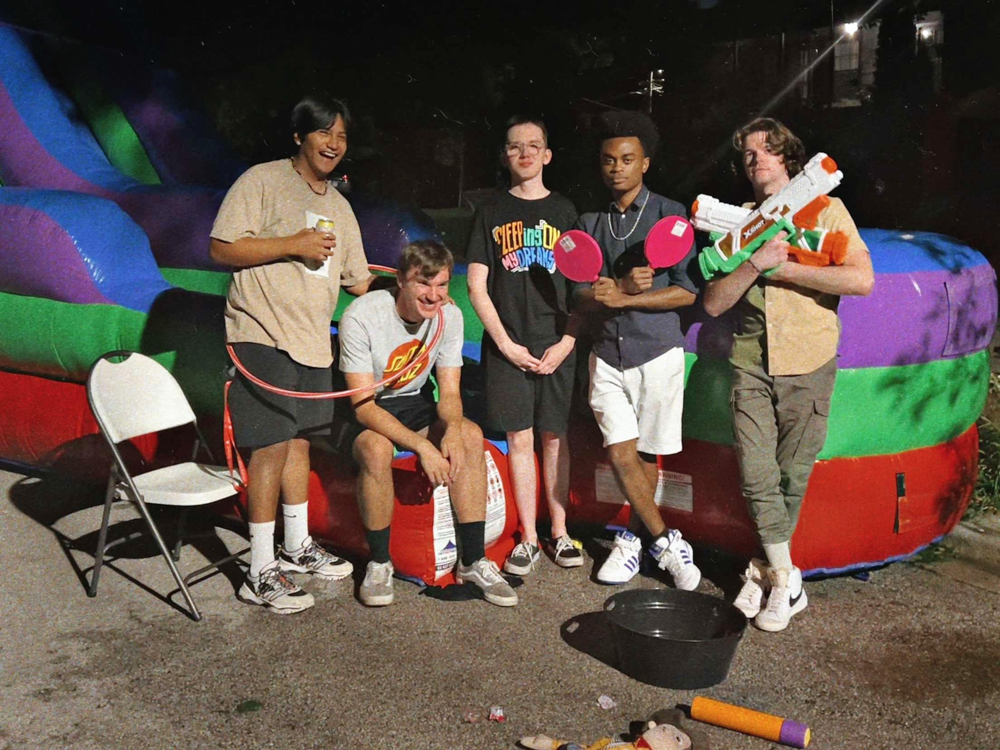
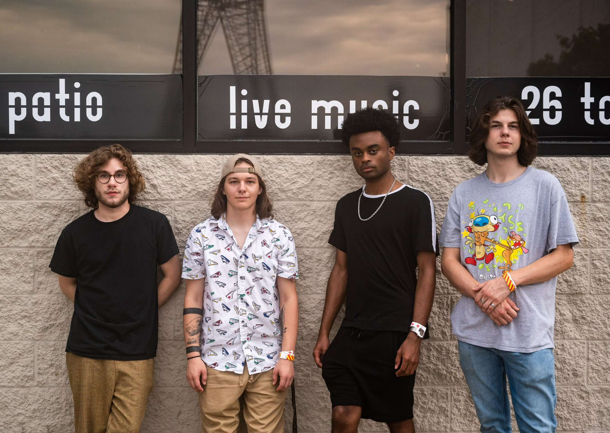

Timeless
Based in Southland Chicago, TiMELeSS Evolution has built a reputation on creating a thrilling and musical experience that captivates any audience wherever they go. Inspired by a handful of genres across decades, the supergroup puts its own stamp on familiar and timeless classics that spread joy throughout every generation. The band is fronted by guitarist and vocalist Kendall Carter, who has performed at notable venues such as House of Blues Chicago, Buddy Guy's Legends, the Chicago Blues Festival, and even down in Memphis, TN. Right alongside Kendall is Manny Gonzalez, another exceptional talent on guitar–one of Chicagoland's best. Each one of the band’s top-tier musicians takes influence from a wide array of artists from Michael Jackson to Stevie Wonder to Prince, from Jimi Hendrix to Stevie Ray Vaughan to John Mayer, and from George Benson to D'Angelo to Robert Glasper.